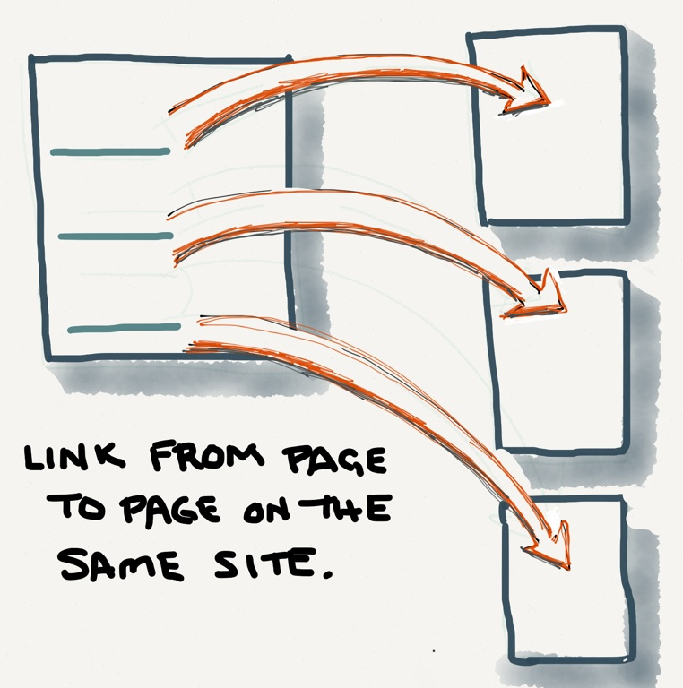
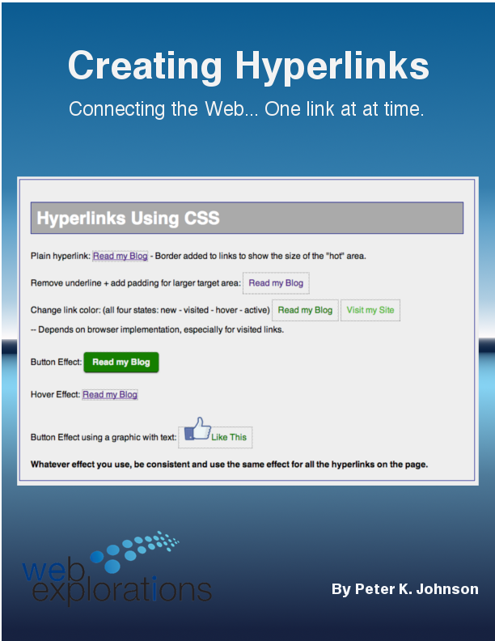
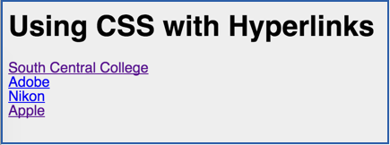
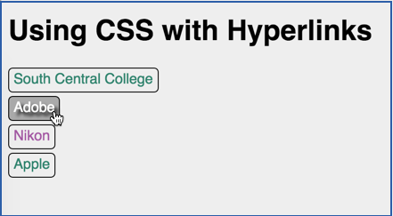
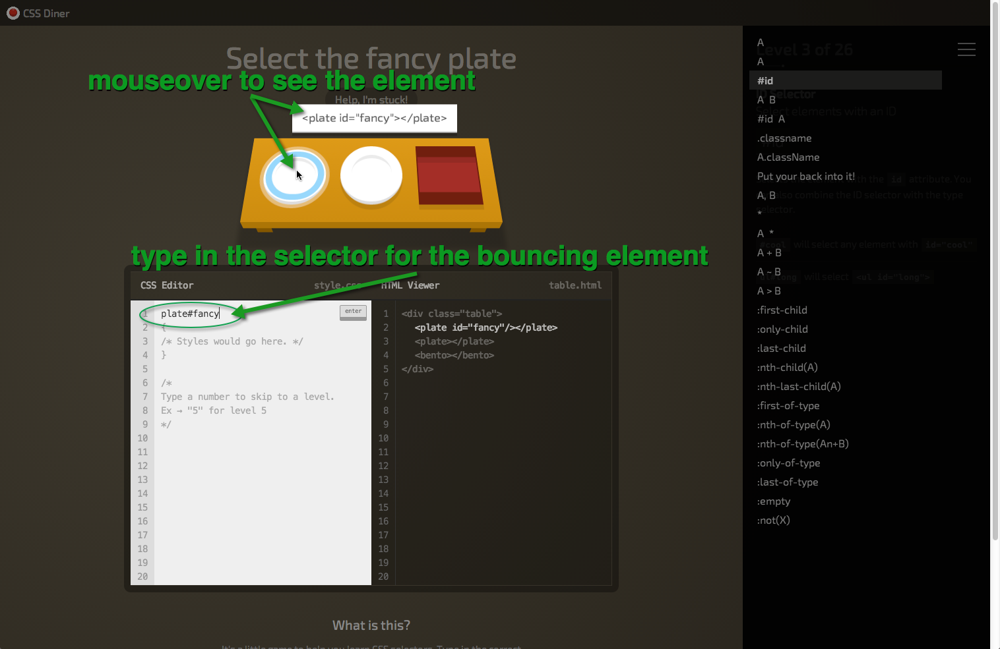
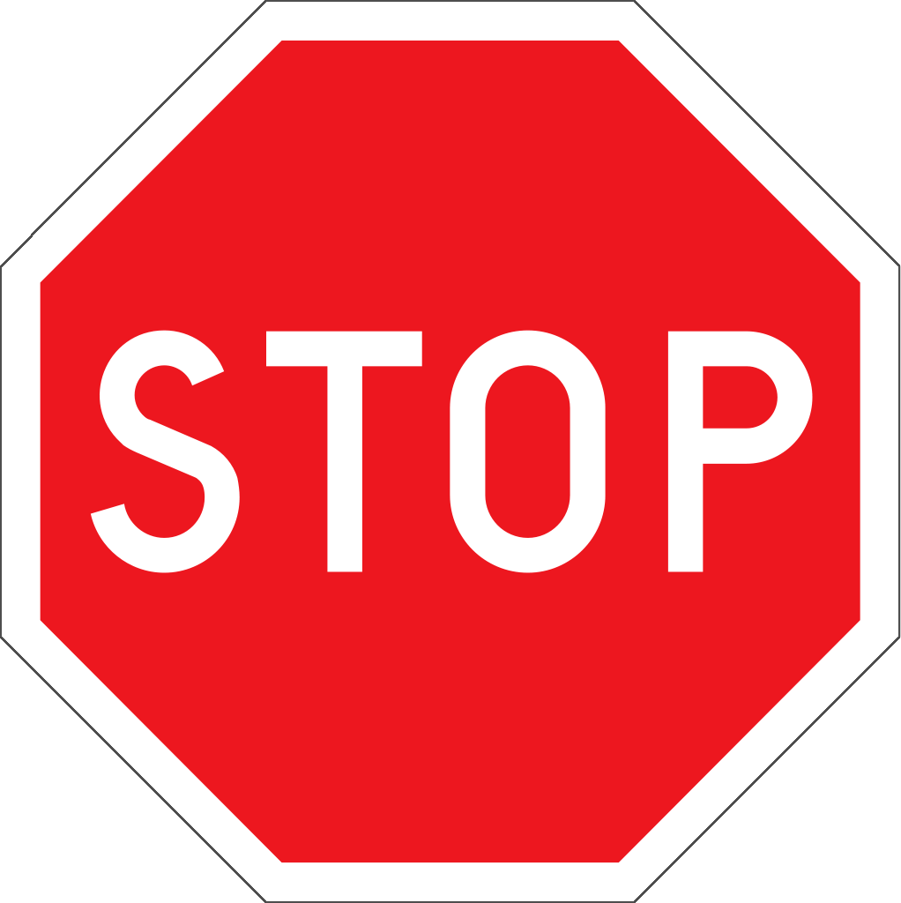
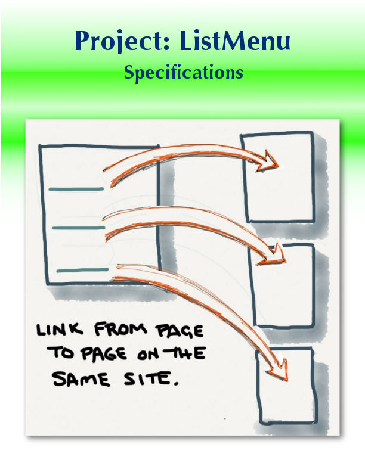
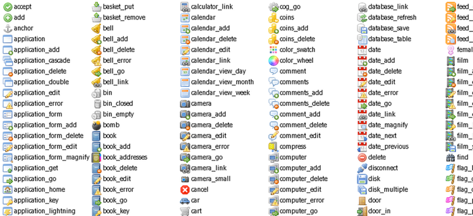
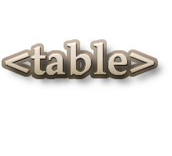

Hyperlinks |
|
Connecting the Web... one link at a time. |
In this module you will learn:
Use Hyperlinks and Anchors on a web page.

- The basic pattern for every link and anchor.
- Linking to another page on your site.
- Linking to a page out on the Web.
- Setting an anchor.
- Linking to an anchor.
- Linking to an anchor on another page.
- Create links to download files to the user's computer
- Creating an email link.
- Styling links using CSS.
- How to use links with images.
WII-FM (What's In It - For Me)
Blue, underlined text: The Hyperlink Not much to look at... But, it changed the world.
In this module you'll learn how to include hyperlinks on your web pages. You'll also discover the trick to opening pages in new windows or the same window as well as how to use anchors to jump to specific spots on a page.
Complete these Learning Activities:
Total estimated time for this module: 6 hours.
Take the SelfQuiz:Hyperlinks. This is your LEARNING experience.
You can take this self-quiz as many times as you like. Keep in mind that it will close Sunday night before the graded quiz opens.
Be smart and take the self-quiz once each day to learn the material.
Estimated Time: 10 minutes (probably a lot less) each time you take a self-quiz.
Take the Self-Quiz: Hyperlinks.
Read pages 48-56 in Chapter 2 and 228-229 in Chapter 8 of Basics of Web Design HTML5 and CSS3 - HTML Basics.

- Creating an anchor
- Hyperlinks in another tab or window
- Relative Hyperlinks
- Block anchors
- Email hyperlinks
Estimated Time: 1 hour
Read pages 48-56 in chapter 2 and 228-229 in Chapter 8 of Basics of Web Design HTML5 and CSS3 - HTML Basics.

View the Tutorial: Creating Hyperlinks - Learn how to link to internal pages, pages out on the Web, and how to use CSS to make your links look and act more interesting to the user.
Here is a copy of the code examples.
Estimated Time: 1 hour
View the Tutorial: Creating Hyperlinks.
Complete the Use Link Lab.
Estimated Time: 2 hours
Complete the Use Link Lab.
Use CSS to make menus using unordered lists of hyperlinks. A basic menu - Creating a basic menu system using CSS
Estimated Time: 2 hours.
Use CSS to make menus using unordered lists of hyperlinks. A basic menu
Use CSS to change the appearance of your hyperlinks including pseudo-elements.  
(Click on images for a larger view.)
Start with cssHyperlinkSTART.html and fill in the CSS to change the appearance of your hyperlinks using The Definitive Guide to Styling Web Links as a reference.
Estimated Time: 30 minutes
Use CSS to change the appearance of your hyperlinks including pseudo-elements

How to play:
- Mouse over the object to see what its element name is.
- Read the description in the right panel to know what type of selector the game is expecting.
- Type in the correct selector and the items will disappear. Poof!
No need for style rules! This is just working with the selector statement. - Type in the wrong selector and they will shake their heads, "No."
- Pay attention to how your brain learns. (Frustration before triumph.)
Estimated Time: 15 minutes
OPTIONAL: Add transitions to your icon menus
Estimated Time: 1 hour
OPTIONAL: Add transitions to your icon menus
Your Graded Assignments For This Module

Stop!Don't frustrate yourself. Do the Learning Activities BEFORE starting these graded activities.
Take the Graded Quiz: ListMenu
- There will be 10 true/false and multiple choice questions.
- 10 questions - 10 minutes - 10 points
- Feel free to use your book or look stuff up on the Web or try things out on your computer.
- You will have one chance to take the quiz.
- The questions will be from the same database that the self-quiz uses.
- The quiz will be scored automatically and your points shown in your D2L grade book.
Estimated Time: 10 minutes
Look on the Course Map for the due date for this graded activity.

This project covers Lists, Hyperlinks, and Menus.
You should already have your pages and lists set up from the Module: Lists.
Now just add the hyperlinks and build a menu system.
Your Tip-Of-The-Week
(Click on the lightbulb to reveal the tip.)
Get Icons for your Links
FamFamFam.com offers free icons under the Creative Commons license.

What's Next?

Organize data into tables. Add a little CSS, and you have a great looking display of key information or comparison charts on your pages.